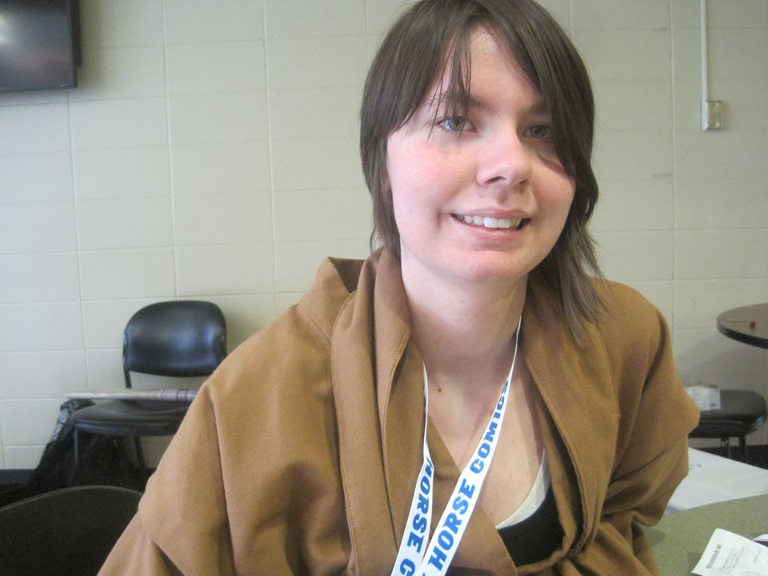

Bio
Taylor DeWitt is a junior at Eastern Washington University, originally from Spokane, Washington. This spring she will be continuing her B.A. in Visual Communication Design with a minor in Art History. During her time at EWU, she has begun work as a graphic designer for the dean of students, creating promotional materials for Student Life on campus. As a graphic Designer, Taylor has 2 business logos, one trademarked, as well as 2 t-shirt designs and many advertisements under her belt. When Taylor isn't studying or working, she is sleeping, playing video games, or otherwise just relaxing with her boyfriend, Ryan.
Resume
Qualifications
‣ Experience with Adobe Suite CS6 (InDesign, Illustrator, Photoshop
‣ Time Management
‣ Leadership Skills
‣ A willingness to learn and grow
‣ Commitment to the job
‣ A drive to do well and achieve goals
‣ Flexibility with job tasks and time
‣ A positive attitude
‣ Able to think critically
‣ Organized
‣ Dependable
‣ Be able to communicate well
Computer Skills
Software
Adobe InDesign, Adobe Photoshop, Adobe Illustrator, Microsoft Word, Microsoft Excel, Microsoft Outlook, Microsoft Powerpoint, Apple Keynote, Adobe Premiere
Words Per Minute
68 WPM
Education
University High School
2010-2014
Spokane Community College
2012-2014
Eastern Washington University
2014-Current
Major: Visual Communication Design
Experience
Display House
Sales Associate
2012,2013-14
Spokane Community College
Promotions Coordinator
2014
Eastern Washington University
Graphics Assistant: Student Support and Advocacy
2015
Eastern Washington University
Graphics Assistant: CSBSSW & Fostering Washington
2015 - Current